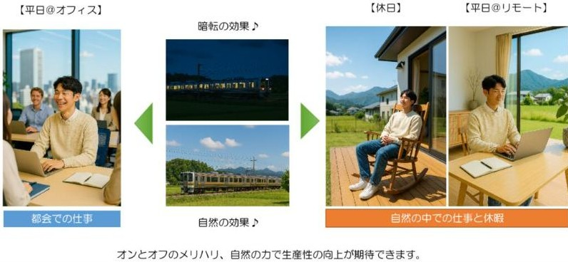
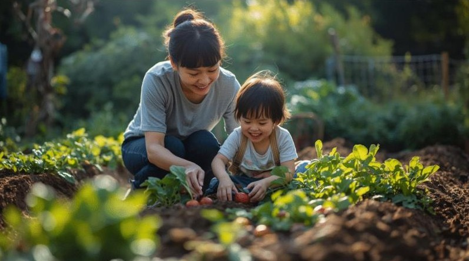
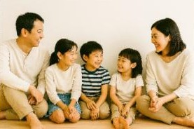
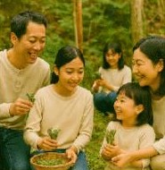
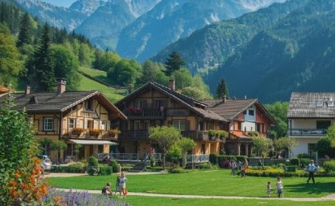
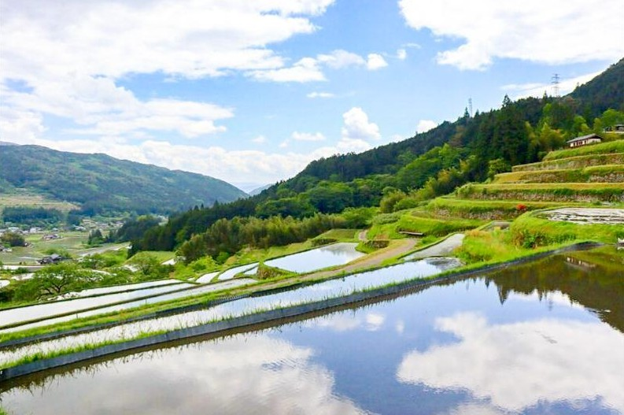
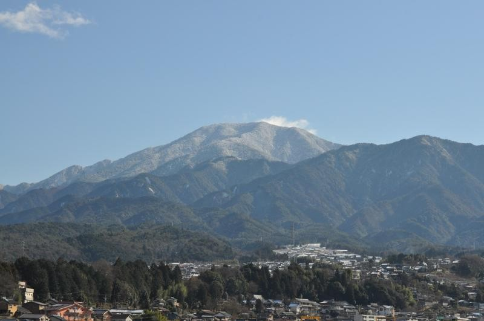
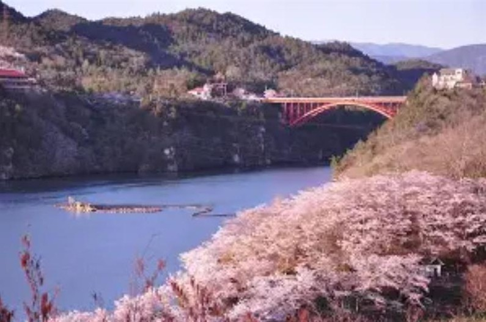
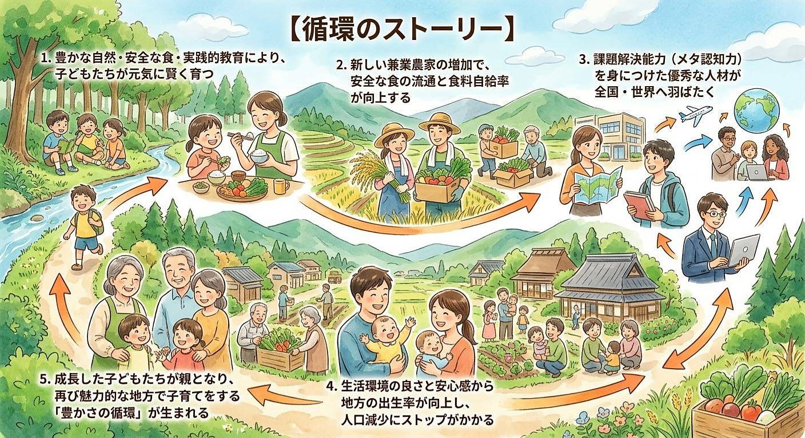

ハードル 1｜仕事
地方に納得のいく仕事がない
都市部とのハイブリッド勤務・企業の選択肢拡大
① 通勤可能なエリアの開拓＆リモートワーク活用
完全に職を変えるのではなく、週の数日リモートワーク＋通勤できる「トカイナカ（都会＋田舎）」を選ぶことで、都市の刺激と地方の穏やかさを両立できます。
② 企業側による「地方生活」の選択肢提示
日本の雇用者の多くを占める企業に対し、社員のライフスタイルの選択肢として地方生活やテレワーク環境を紹介・推奨する働きかけを行います。
Nature Power In LifeInteresting Job In Life
地方創生、教育、食育、住みたい環境など、生き方を丸ごと考えるサイトです。
現在、日本の地方では人口減少、地域経済の停滞、食料自給率の低下、教育環境の変化など、複雑な社会的課題が山積しています。
「豊かな日本を、次の世代にしっかりと引き継いでいきたい」
私たちは、これらの課題を根本から解決する鍵は「子育て世代による地方活性化」にあると考えています。
「地方に移住しよう」と呼びかけるだけではありません。移住したい地方があれば良し。無ければ、住みたい地方を自ら創る。子育て世代のリアルなニーズに応え、人と地域がともに育つ「新しい街づくりと持続可能なライフスタイル」をご提案します。
地方での暮らしに興味はあっても、一歩踏み出せない理由には共通する「3つの壁」があります。私たちはそのハードルを低くする具体的な解決策を提示します。
ハードル 1｜仕事
地方に納得のいく仕事がない
完全に職を変えるのではなく、週の数日リモートワーク＋通勤できる「トカイナカ（都会＋田舎）」を選ぶことで、都市の刺激と地方の穏やかさを両立できます。
日本の雇用者の多くを占める企業に対し、社員のライフスタイルの選択肢として地方生活やテレワーク環境を紹介・推奨する働きかけを行います。
ハードル 2｜生活イメージ
実際の生活イメージが湧かない
ネットの情報だけでなく、現地での移住体験やワークショップを通して「実際の暮らし」を体感します。多くの地方でプログラムを提供しています。
ハードル 3｜住みたい街
心から「住みたい」と思える地方がない
自治体の頑張りと移住者のニーズを融合させ、教育やコミュニティといった「暮らす価値」を自分たちの手でアップデートしていきます。
| 住みたい地方の条件 | 内容 | 条件の性質 |
|---|---|---|
| 1. 自然・環境 | ||
| 自然環境 | 海が近い、山が近い、川が近いなど、趣味や癒やしを求める場所か。 | 変えられない、ありのままの条件 |
| 畑や庭付きの物件で自給自足やガーデニングを楽しみたいか。 | 変えられない、ありのままの条件 | |
| 気候 | 雪が少ない、温暖な気候が良い、夏は涼しい方が良いなど、適応できる暑さ・寒さの程度。 | 変えられない、ありのままの条件 |
| 2. 生活・利便性 | ||
| 医療体制 | 総合病院や専門医が生活圏内にあるか、緊急時のアクセス。 | ありのままの条件 |
| 公共交通機関（バス、電車）の整備状況や利用頻度。 | 人が増えれば、変わる条件 | |
| 都市部や実家へのアクセス（新幹線、高速道路のインターチェンジからの距離など）。 | ほぼ、ありのままの条件 | |
| 住居 | 賃貸か購入か、一軒家か集合住宅か。古民家を希望するか、新築・築浅が良いか。 | 自分が楽しむ条件 |
| 3. 人間関係・コミュニティ | ||
| 地域との関わり | 濃密な近所付き合いや地域の活動（祭り、草刈りなど）への参加を許容できるか。 | 地方が自ら変えていくべき条件 |
| 移住者（よそ者）に対する地元住民の寛容さ。 | 地方が自ら変えていくべき条件 | |
| 移住者が多く集まっている地域か、地元のコミュニティが中心か。 | 地方が自ら変えていくべき条件 | |
| 4. 仕事・経済 | ||
| 移住先で仕事を見つける必要があるか（求人の種類、数）。 | ありのままの条件 | |
| 起業や農業を考えている場合、その支援制度があるか。 | 地方が自ら変えていくべき条件 | |
| 5. 子育て・教育 | ||
| 子育て環境 | 待機児童の状況、保育園・学校までの距離、子どもの遊び場や自然体験の機会。 | 地方が自ら変えていくべき条件 |
| 教育施設 | 希望する学校や習い事の環境 | 地方が自ら変えていくべき条件 |

1ワークスタイル
オフィスでの対面コミュニケーションと、自然豊かな環境でのリモートワークを使い分けることで、生産性と創造性は飛躍的に向上します。
緑豊かな環境で深呼吸しながら仕事に向き合う生活は、脳をリフレッシュさせ、AI時代に必要な「人間らしいアイデア」を生み出します。

2食のスタイル
本当の意味で安心・安全な食とは、大切な家族を想って作った農産物です。
テクノロジーを賢く活用して家庭菜園や小規模農業を行い、余剰分を地域にシェアする「新しい兼業農家」が増えることで、日本の食料問題の改善と、子どもたちの健やかな体・脳の発育に貢献します。


3教育のスタイル
都市部の予備校や有名校に頼るだけが教育ではありません。
地方特有の「大人と子どもの距離の近さ」や「地域の課題」に幼少期から触れることで、「なぜ勉強するのか」を自ら理解し、自走して問題を解決する力（高いメタ認知能力）が育ちます。ITを活用した高度なオンライン学習と地域での実践を組み合わせた、新しい教育環境を実現します。

4コミュニティ＆住環境
ゆとりある住環境と温かい地域コミュニティ、そして高い出生率に裏打ちされた子育てしやすい環境が、家族全員の心にゆとりをもたらします。
事例紹介
「住みたい田舎ベストランキング」で連覇（2024年、2025年）を達成している岐阜県恵那市（えなし）は、まさに私たちが目指すモデルケースの一つです。



| 評価項目 | 恵那市（岐阜県）の主な特徴と魅力 |
|---|---|
| 自然・環境 | 「坂折棚田（日本の棚田百選）」や「農村景観日本一」など、美しく守られた景観が豊富。 |
| 生活・利便性 | 名古屋駅まで電車で約1時間。市立恵那病院（二次救急）など医療体制も充実した「トカイナカ」。 |
| コミュニティ | 移住定住の相談窓口（NPO連携）や伝統芸能を通じた、外部を受け入れる温かい土壌。 |
| 仕事・経済 | 恵那テクノパークなどの工業団地があり、「清流の国ぎふ移住支援金」など起業・就業支援も手厚い。 |
| 子育て・教育 | 高校生等（18歳到達年度末）までの医療費無償化（所得制限なし）や独自の「恵那学」を実施。 |
地元農家との連携、マルシェの開催、高校生との協働プロジェクトなど、一企業が地域の魅力を高め、経済循環を生み出している素晴らしい事例も存在します。
子育て世代が地方で生き生きと暮らし、子どもたちが健やかに育つサイクル（mirai cycle）ができると、社会課題は連鎖的に解決に向かいます。

循環のストーリー
そして、ふたたび 1 へ。
「地方での暮らし」は、単なる避難先でも一時的なトレンドでもありません。
自分たちの生き方を選び、子どもの未来を切り拓き、結果として日本全体を元気にしていくだんぜん魅力的なイノベーションです。
具体的な仕組みやストーリーについては、こちらの解説ページで詳しくご紹介しています。ぜひ合わせてご覧ください。
地方は多くのビジネスによって支えられています。
私たちが目指すのは、地方での豊かな生活を通して「自分・家族・そして日本全体」を良くしていく仕組みづくりです。
少しでも興味を持っていただけましたら、ぜひお気軽にお問い合わせください！
お問合せ